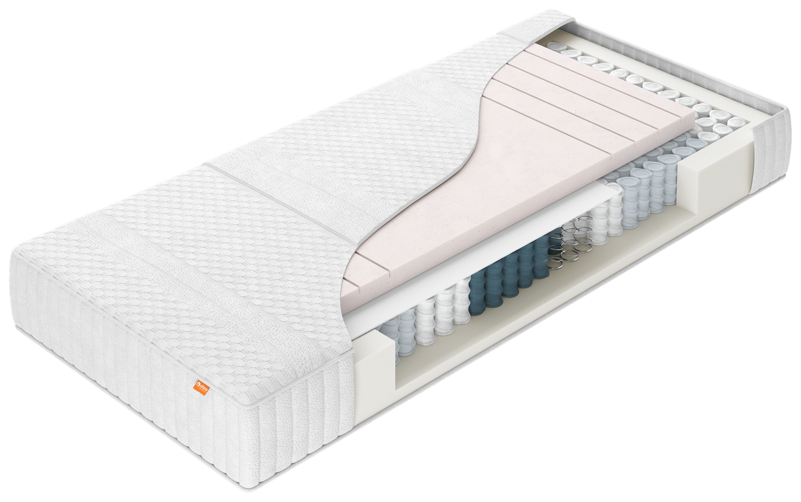
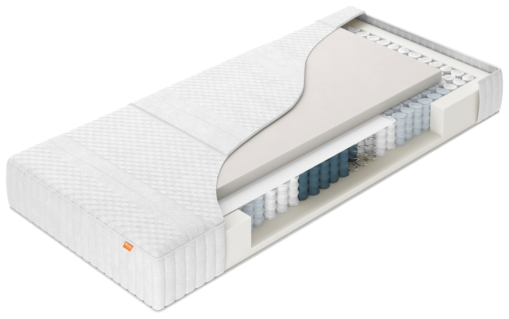
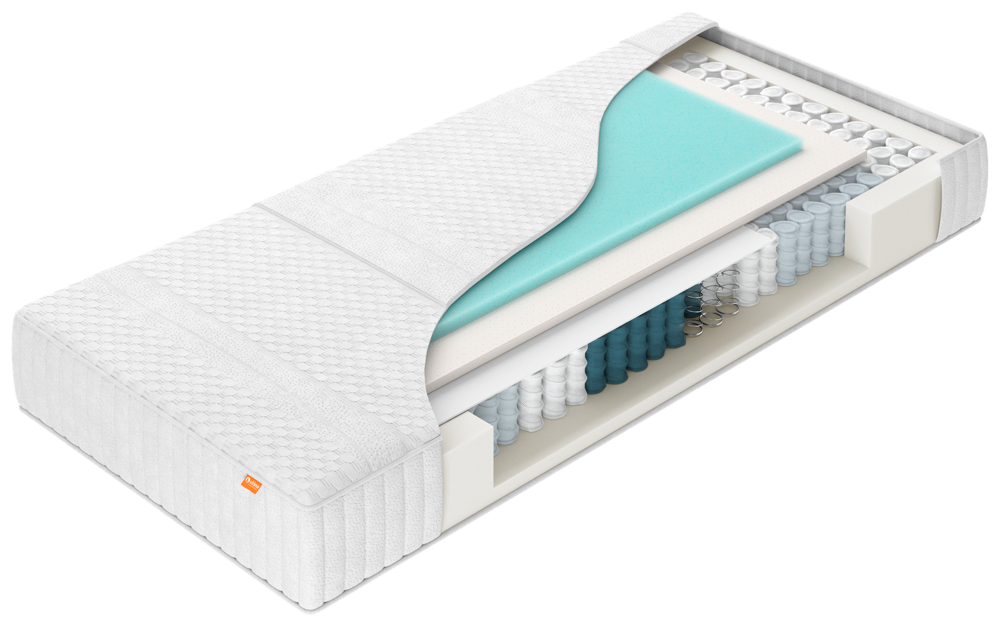
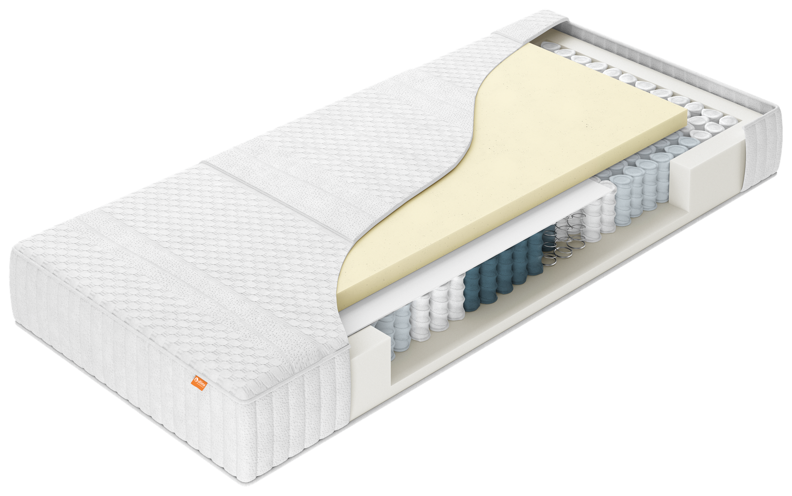

Matrassen — CumLaude
CumLaude: één basis, zes comfortlagen.
Alle zes CumLaude-modellen (1000–6000) delen dezelfde 7-zone pocketveringkern, hardheden en tijkopties — het verschil zit in de comfortlaag. Ontdek welk model bij jou past.
01 — CumLaude 1000
Energyfoam contour.
CumLaude 1000 heeft een comfortlaag van Energyfoam contourschuim bovenop de 7-zone pocketveringkern — dezelfde toegankelijke schuimsoort als bij Initio PE10, nu met een contourvorm voor extra drukverdeling. Niet keerbaar, wel te draaien van hoofd- naar voeteneind dankzij de symmetrische opbouw. Totale hoogte ca. 24 cm.
- Comfortlaag van Energyfoam contourschuim
- 7-zone pocketveringkern
- 4 hardheden: soepel, medium, stevig, extra stevig
- Tijk naar keuze: Climate (ventilerend) of Natura (scheerwol)
- Anti-slipsysteem aan de onderzijde
- Optioneel met uitgebreide schouderzone (Elastica)
Goed om te weten: Energyfoam contour geeft een soepele, nauwkeurig aanpassende ondersteuning — vergelijkbaar met de Energyfoam-laag van Initio PE10.

CumLaude 1000
CumLaude 200002 — CumLaude 2000
Pulse latex.
CumLaude 2000 heeft een comfortlaag van Pulse latex bovenop de 7-zone pocketveringkern. Niet keerbaar, wel te draaien van hoofd- naar voeteneind dankzij de symmetrische opbouw. Totale hoogte ca. 24 cm.
- Comfortlaag van Pulse latex
- 7-zone pocketveringkern
- 4 hardheden: soepel, medium, stevig, extra stevig
- Tijk naar keuze: Climate (ventilerend) of Natura (scheerwol)
- Anti-slipsysteem aan de onderzijde
- Optioneel met uitgebreide schouderzone (Elastica)
Goed om te weten: twijfel je tussen de zes comfortlagen? Vraag je dealer naar een proefligging om het gevoel van Pulse latex te ervaren.
03 — CumLaude 3000
Latex/FlowFoam.
CumLaude 3000 combineert latex en FlowFoam in de comfortlaag bovenop de 7-zone pocketveringkern. Niet keerbaar, wel te draaien van hoofd- naar voeteneind dankzij de symmetrische opbouw. Totale hoogte ca. 24 cm.
- Comfortlaag van latex en FlowFoam
- 7-zone pocketveringkern
- 4 hardheden: soepel, medium, stevig, extra stevig
- Tijk naar keuze: Climate (ventilerend) of Natura (scheerwol)
- Anti-slipsysteem aan de onderzijde
- Optioneel met uitgebreide schouderzone (Elastica)
Goed om te weten: de combinatie van latex en FlowFoam maakt CumLaude 3000 een tussenoptie binnen de collectie — vraag je dealer naar de mogelijkheden.

CumLaude 300004 — CumLaude 4000
Talalay latex.
CumLaude 4000 heeft een comfortlaag van Talalay-latex bovenop de 7-zone pocketveringkern. Niet keerbaar, wel te draaien van hoofd- naar voeteneind dankzij de symmetrische opbouw. Totale hoogte ca. 24 cm.
- Comfortlaag van Talalay-latex
- 7-zone pocketveringkern
- 4 hardheden: soepel, medium, stevig, extra stevig
- Tijk naar keuze: Climate (ventilerend) of Natura (scheerwol)
- Anti-slipsysteem aan de onderzijde
- Optioneel met uitgebreide schouderzone (Elastica)
Goed om te weten: Talalay is een bekende, luchtig geklopte manier van latex verwerken — vraag je dealer naar het verschil met de andere CumLaude-comfortlagen.
05 — CumLaude 5000
Natuurlatex.
CumLaude 5000 heeft een comfortlaag van 100% natuurlatex bovenop de 7-zone pocketveringkern. Niet keerbaar, wel te draaien van hoofd- naar voeteneind dankzij de symmetrische opbouw. Totale hoogte ca. 24 cm.
- Comfortlaag van 100% natuurlatex
- 7-zone pocketveringkern
- 4 hardheden: soepel, medium, stevig, extra stevig
- Tijk naar keuze: Climate (ventilerend) of Natura (scheerwol)
- Anti-slipsysteem aan de onderzijde
- Optioneel met uitgebreide schouderzone (Elastica)
Goed om te weten: natuurlatex is van nature stof- en bacteriewerend — net als bij Havea een prettige eigenschap voor wie gevoelig is voor allergieën.

CumLaude 600006 — CumLaude 6000
Traagschuim.
CumLaude 6000 heeft een comfortlaag van traagschuim bovenop de 7-zone pocketveringkern. Niet keerbaar, wel te draaien van hoofd- naar voeteneind dankzij de symmetrische opbouw. Totale hoogte ca. 24 cm.
- Comfortlaag van traagschuim
- 7-zone pocketveringkern
- 4 hardheden: soepel, medium, stevig, extra stevig
- Tijk naar keuze: Climate (ventilerend) of Natura (scheerwol)
- Anti-slipsysteem aan de onderzijde
- Optioneel met uitgebreide schouderzone (Elastica)
Goed om te weten: traagschuim past zich langzaam aan je lichaamscontouren aan en veert minder snel terug — een drukverlagende keuze voor wie graag wat wegzakt.
Combineer je CumLaude met de rest van de collectie
Bekijk ook onze andere matrasseries, boxsprings, topmatrassen, gestoffeerde ledikanten en kussens.
Bekijk alle matrassenErvaar CumLaude zelf
Onze dealers helpen je graag de juiste comfortlaag en tijk te kiezen.
Vind een dealer